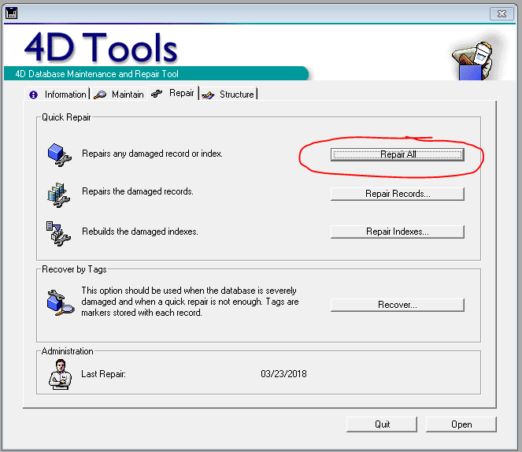

How to repair data that may have been corrupted in 4D.
Log on to Stephanie's desktop as schum416. Ask her for the
login information.
Certain tasks, for example, editing customer information in the order window, can
corrupt the data. Try this only if the first two troubleshooting methods were not
successful.
Click the SoilTesting4D folder desktop icon.
Open the 4D Stuff folder.
Open 4D Tools 2003.8r2 folder. Note: Open the normal folder, not the compressed
one.
Select the 4D Tools application. Note: Make sure to select the application and
not the structures file.
Follow the prompt to locate the database on the computer at the following
address: Computer > Local Disc (C:) > Users > schum416 > Desktop >
SoilTesting4D.
Change the file type in the corner to "Compiled Database (*.4dc)" Click
"Soils" as shown below.
Log in with username "designer" and password "dirt1".
Click the "Repair" tab and click "Repair All" next to "Repairs any damaged
record or index." Note: This may take several minutes. When it's done, close it
and try opening the 4D client again. If it doesn't work, try (these
instructions) if you are able to get to the database selection screen.
Figure: 4D Tools window with 'Repair All' button circled 